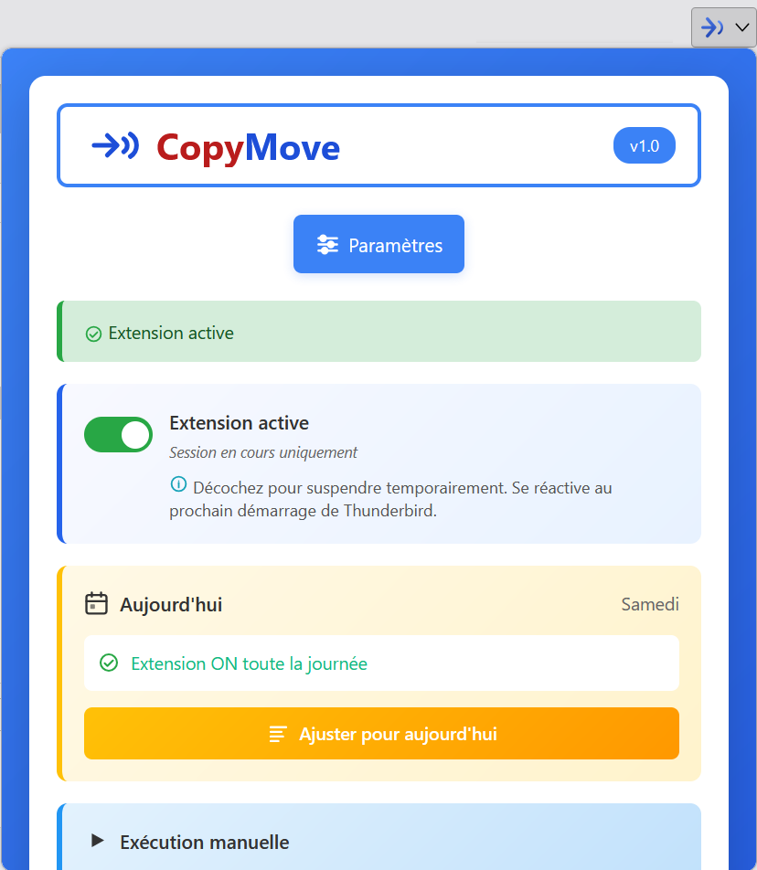
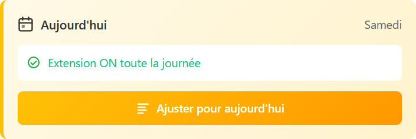
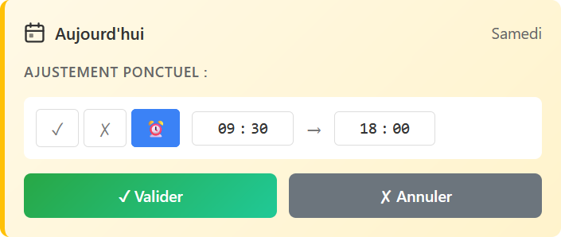
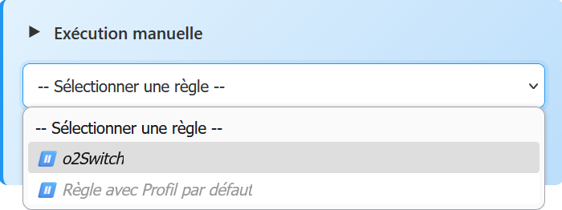
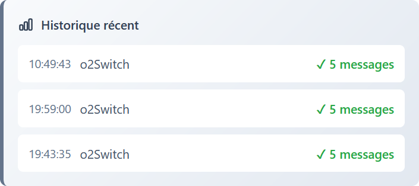

La fenêtre de l'extension est la porte d'entrée de CopyMove dans Thunderbird. Cliquez sur l'icône de l'extension dans la barre d'outils pour l'ouvrir. Elle donne accès aux paramètres et affiche l'état de l'extension en un coup d'œil.

Activer / désactiver l'extension
Le bouton bascule en haut de la fenêtre de l'extension indique si CopyMove est actif ou inactif, et permet de forcer l'état pour la session en cours. Décochez-le pour suspendre le traitement des règles ; cochez-le pour forcer l'activation, indépendamment de la planification.
Le bouton n'est pas utilisable tant qu'aucune règle n'est configurée.
Planification — Aujourd'hui
La section Aujourd'hui affiche le jour en cours et le mode de fonctionnement prévu selon votre planification hebdomadaire :
- ✓ ON toute la journée — l'extension fonctionne en continu
- ✗ OFF toute la journée — l'extension est désactivée
- ⏰ Plage horaire — l'extension ne fonctionne qu'entre les heures configurées
Lorsque la planification est désactivée (réglage par défaut), la section affiche Planification désactivée - Extension inactive : l'extension n'exécute alors rien automatiquement.
Le bouton Ajuster pour aujourd'hui permet de modifier ponctuellement ce comportement sans toucher à la planification hebdomadaire, même si celle-ci est désactivée. Choisissez un mode puis cliquez sur ✓ Valider (ou ✗ Annuler). L'ajustement ne vaut que pour la journée en cours.


Exécution manuelle
La section Exécution manuelle permet de déclencher une règle immédiatement, sans attendre son prochain déclenchement automatique. Cliquer sur son titre ouvre l'onglet Règles.
Sélectionnez la règle souhaitée dans la liste déroulante, puis cliquez sur Exécuter cette règle. L'exécution manuelle fonctionne même lorsque l'extension est inactive.

Suivre une exécution
Pendant qu'une règle s'exécute, la fenêtre de l'extension affiche l'étape en cours (Étape 1/3 à 3/3 : décompte, transfert, vérification du résultat), un badge de progression et le lien Détails, qui ouvre l'onglet Règles.
Le bouton STOP interrompt l'exécution à tout moment. Les courriels déjà traités ne sont pas annulés.
Historique récent
La section Historique récent affiche les trois dernières exécutions de règles : nom de la règle, nombre de courriels traités et résultat.
Cliquer sur le titre de la section ouvre l'onglet Statistiques, où se trouve l'historique détaillé.
